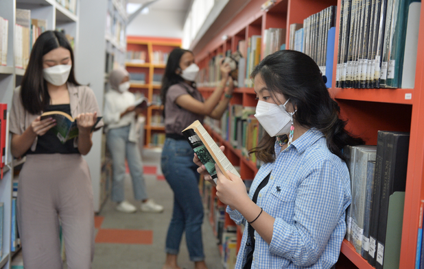
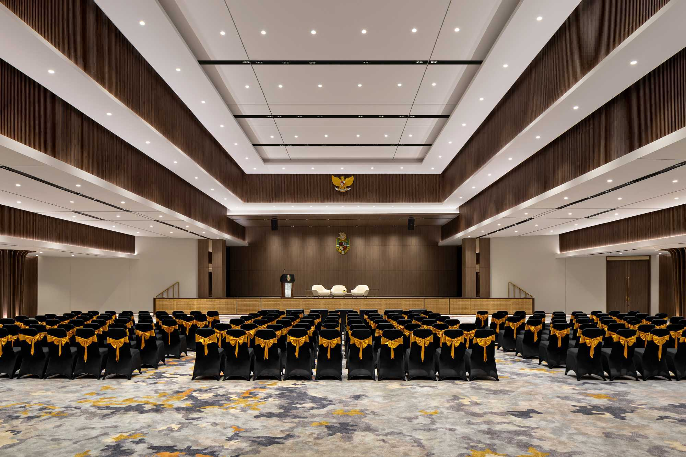
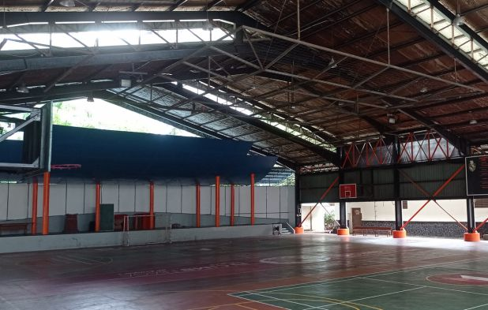
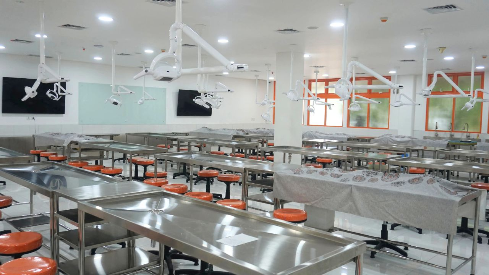

Perpustakaan berlantai tiga yang menjadi pusat pengambilan referensi dan kegiatan diskusi mahasiswa.

Aula sebagai pusat kegiatan, peristiwa, dan interaksi bagi mahasiswa dalam kehidupan kampus.

Sebuah lapangan yang menaungi pusat aktivitas olahraga bagi mahasiswa.
Laboratorium
Unika Atma Jaya menyediakan fasilitas laboratorium sesuai dengan fakultas yang memerlukannya.
- Laboratorium Komputer
- Laboratorium Teknik
- Laboratorium PGSD
- Laboratorium Peradilan Semu


Kapel Atma Jaya
Unika Atma Jaya menyediakan tempat doa, refleksi, dan pusat peribadatan bagi umat Katolik di lingkungan kampus Unika Atma Jaya.
Kapel Atma Jaya menjadi ruang yang tenang dan nyaman bagi mahasiswa, dosen, tenaga kependidikan, serta seluruh warga akademik untuk memperdalam iman, menemukan ketenangan batin, dan membangun relasi yang lebih dekat dengan Tuhan di tengah dinamika kehidupan akademik.